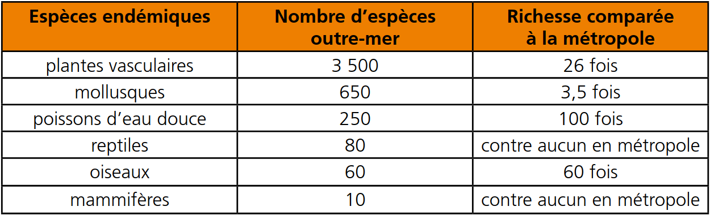

La Biodiversité
Les territoires ultramarins, peuplés de près de 3 millions d'habitants, sont situés à plusieurs milliers de kilomètres de la métropole et représentent une superficie de 120 000 km2 de terres. Grâce à eux, la France est présente sur tous les continents et dans les océans. (https://www.cbd.int/doc/external/cop-09/france-flyer-fr.pdf)
forêt guyanaise
La forêt guyanaise est un important massif forestier français, occupant 8 millions d'hectares. Principalement domanial, il couvre l'essentiel de la Guyane, département français le plus boisé.
En Guyane, plus de 1 200 espèces arborées indigènes sont actuellement répertoriées. De nouvelles espèces sont régulièrement décrites. Une liste plus complète de 1 581 espèces a été publiée en 20091. La liste suivante est donc loin d'être exhaustive !

www.cbd.int
Cette liste comprend également des espèces de palmiers, bien que généralement non considérés comme des arbres...
La forêt guyanaise est une forêt tropicale humide. Il s'agit aussi pour l'essentiel de sa surface d'une forêt primaire.
(https://www.cbd.int/doc/external/cop-09/france-flyer-fr.pdf)
La Flore et la Faune
La Guadeloupe compte de nombreuses espèces d'insectes comme des papillons ( rhopalocères ), des phasmes appelés cheval à diable , et une espèce endémique d'araignée : la Holothele sulfurensis . L'Île compte également des coléoptères dont certains atteignent des tailles très élevées, comme le Dynaste Hercule . (https://fr.wikipedia.org/wiki/Guadeloupe)
La Martinique possède peu d’espèces animales indigènes. Les animaux sauvages les plus courants sont : les manikous (famille des opossums), les matoutous-falaises qui sont des mygales endémiques, l'iguane délicatissima et l'iguane vert, la mangouste, le serpent trigonocéphale ou fer de lance24 et les scolopendres.
Côté ciel, la Martinique est le pays des hérons garde-bœufs, des colibris (4 espèces en Martinique: le colibri madère, le colibri huppé, le colibri falle-vert et le colibri à tête bleue) et des sucriers (reconnaissables à leur ventre jaune).
(https://fr.wikipedia.org/wiki/Martinique)
La flore tropicale et insulaire de l'île de La Réunion se caractérise par sa diversité, un taux d’endémisme très élevé et une structure bien spécifique. La flore réunionnaise compte une grande diversité de milieux naturels et d’espèces (jusqu’à 40 espèces d'arbres/ha, par comparaison à une forêt tempérée qui en compte en moyenne 5/ha).
Cette diversité est d’autant plus remarquable, mais fragile, qu’elle est différente en fonction des milieux (littoral, basse, moyenne et haute montagne).
On recense à La Réunion un taux d’espèces endémiques très élevé, avec plus de 850 plantes indigènes (arrivées naturellement et présentes avant l’arrivée de l’Homme), dont 232 espèces endémiques de La Réunion (seulement présentes sur l’île), ainsi que de nombreuses espèces endémiques à l’archipel des Mascareignes.
La flore réunionnaise se distingue enfin des forêts tropicales équatoriales par une faible hauteur et densité de la canopée, sans doute par adaptation aux cyclones, et une végétation bien spécifique, notamment une forte présence de plantes épiphytes (qui poussent sur d’autres plantes), comme les Orchidaceæ, les Bromeliaceæ, les Cactaceæ, mais aussi les fougères, les lichens et les mousses.
(https://fr.wikipedia.org/wiki/La_R%C3%A9union)
La faune remarquable de La Réunion se concentre autour des oiseaux, des insectes ou des reptiles, qui comptent de nombreuses espèces endémiques, mais l'île n'accueille pas de grand mammifère et ne compte pas d'animal dangereux sur terre.
La faune qui compte le plus d’espèces endémiques est celle des oiseaux, dont certaines espèces sont fortement menacées à l'image du Tuit-tuit, du Pétrel de Barau ou encore du Papangue, et aussi celle des insectes, notamment coléoptères et papillons, encore assez mal connus. Certains animaux, pas nécessairement endémiques, sont aussi devenus des symboles de l’île, à l’image du Paille-en-queue ou de l’Endormi.
La Réunion compte assez peu de mammifères, et une seule espèce endémique, le Ti Moloss qui est une micro-chauve-souris (microchiroptères).
(https://fr.wikipedia.org/wiki/La_R%C3%A9union)